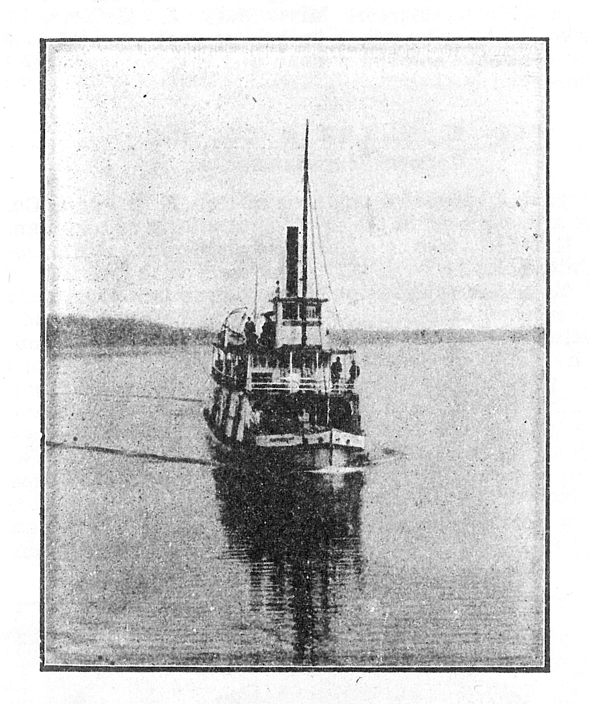

The Mary F Perley
Mary F. Perley, built at Samish in 1888, never served Brownsville but she unwittingly and mysteriously ender her days there. The 104-foot sternwheeler made an unscheduled stop at Brownsville in the dark of night in 1901 with no one aboard. The vessel had burned at Alki Point dock in Seattle and was awaiting repair or disposition. Could the steamer have drifted all that distance, unnoticed, in a single night? It would have been a big job for a tug, especially at night, and no tug owner claimed to have done it. Were there ghostly forces at work? Did this ship have a mind of its own? Perhaps it was seeking a remote hideaway from the ship breaker salvagers...
The Mary F. Perley was never claimed by anybody. Today she is buried beneath a landfill and road bed at the south end of the Brownsville bridge. The mystery is buried with her.